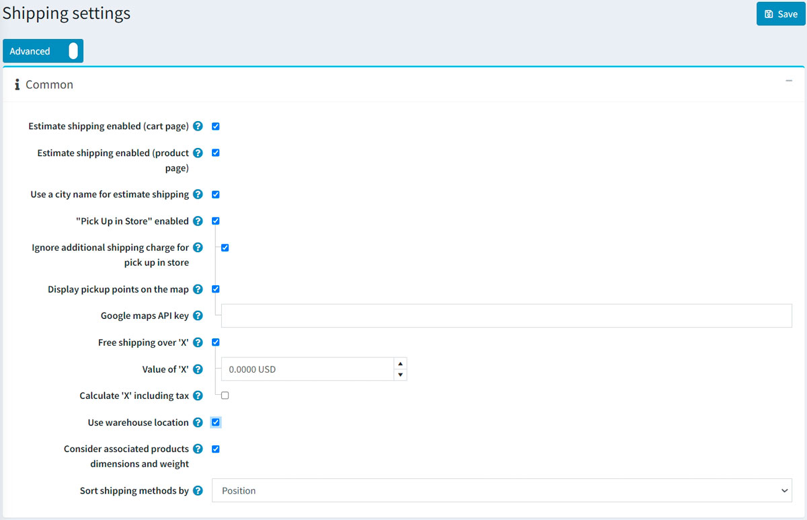
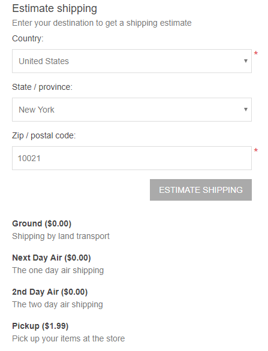
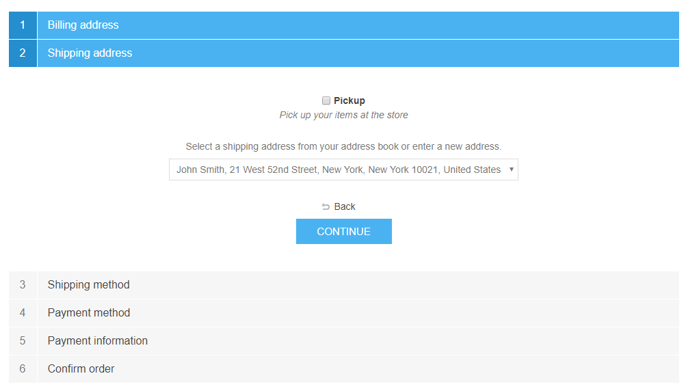
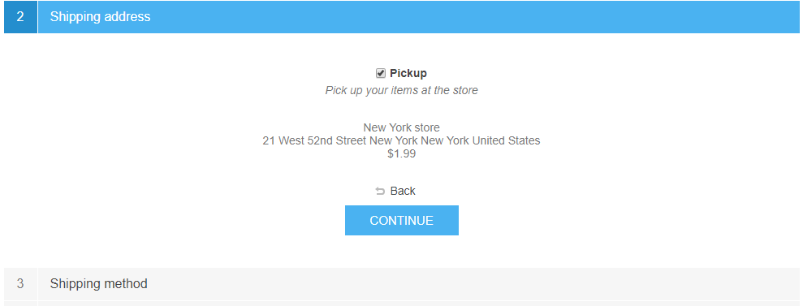
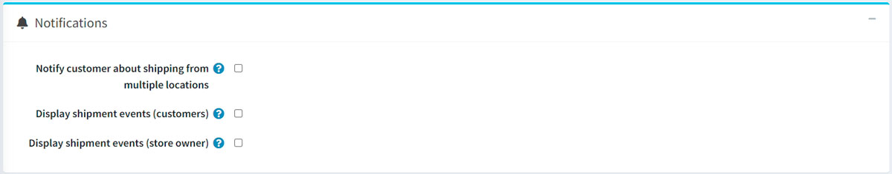
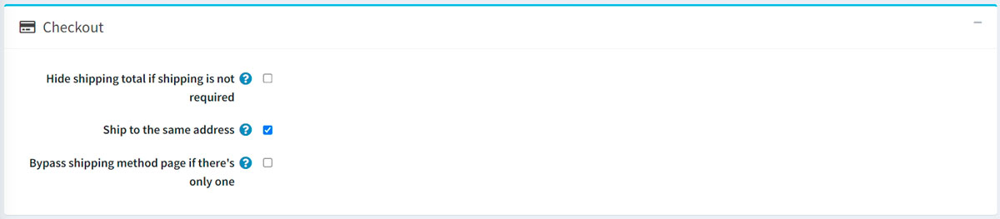
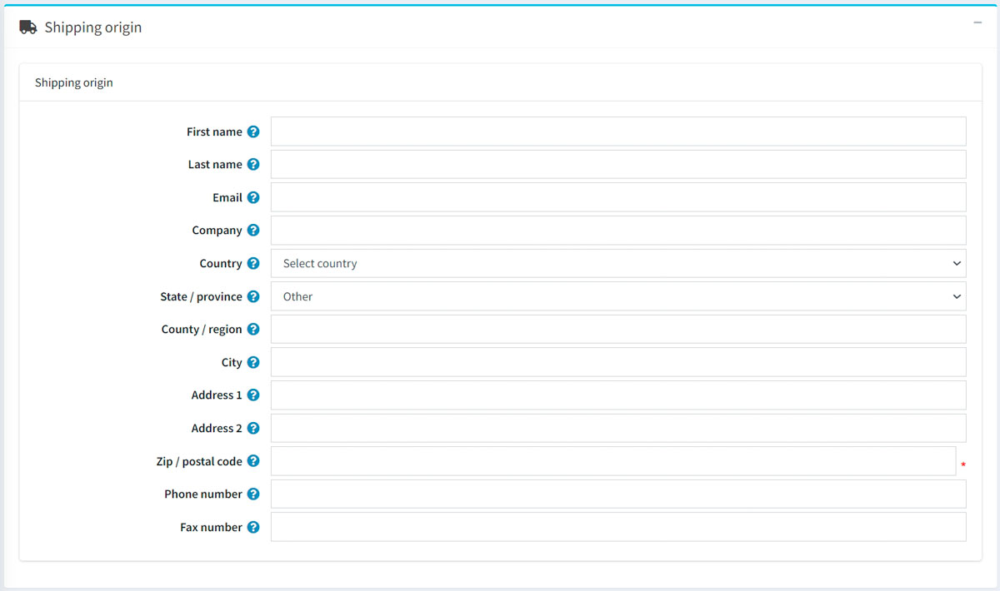

運送設定
本章節說明如何設定商店的運送詳細資訊。除了地點與倉庫設定外，其他因素也有助於完善物流管理。
若要管理運送設定，請前往 設定 → 設定 → 運送設定。
在「一般」面板中定義您的運送設定如下：

- 勾選 啟用運費預估（購物車頁面），以便在購物車頁面中，根據顧客的收貨地址顯示預估運費資訊。請參考下方的截圖以了解其呈現方式。
- 勾選 啟用運費預估（商品頁面），以便在商品詳細頁面中，根據顧客的收貨地址顯示預估運費資訊。請參考下方的截圖以了解其呈現方式。

- 勾選 使用城市名稱進行運費預估 核取方塊，允許顧客輸入城市名稱，而非使用 ZIP 或郵遞區號。
- 勾選 啟用「店內取貨」，以便在結帳流程的收貨地址步驟中顯示店內取貨選項。使用者將會看到以下畫面：


- 若有需要，請勾選 忽略店內取貨的額外運費 核取方塊。
- 若希望在地圖上顯示取貨點，請選擇 在地圖上顯示取貨點。若選取此選項，顧客將無需輸入收貨地址並選擇運送方式。
- Google 地圖 API 金鑰：若已開啟上述設定，請在此處指定 Google 地圖 API 金鑰。
Note
您也可以為「店內取貨」選項指定費用。若要執行此操作，請前往 設定 → 運送 → 取貨點 並設定對應的取貨點提供者。詳情請參閱：取貨點。
- 選擇 「x」金額以上免運費，以啟用超過特定總金額的訂單免運費功能。隨後將顯示下一個欄位，供您定義 'x' 的數值。
- 在 'x' 的數值 欄位中，輸入金額門檻，超過此總金額的所有訂單均可享有免運費優惠。
- 計算 'x' 時包含稅金：若未勾選，則計算數值時將不含稅。
- 勾選 使用倉庫位置，以便在請求運費計算時使用倉庫地點。這對於從多個倉庫出貨的情況非常實用。
- 勾選 考慮關聯商品的尺寸與重量，以便在計算運費時納入關聯商品的尺寸與重量；例如，若主商品已包含這些資訊，則可取消勾選。
- 在 運送方式排序依據 下拉式選單中，選擇要用來排序運送方式的欄位。
在「通知」面板中定義您的運送設定如下：

若有需要，請勾選 通知顧客從多個地點運送。這對於從多個倉庫出貨的情況非常實用。
選擇 顯示出貨事件（顧客），以便顧客在他們的出貨詳細頁面上查看出貨進度。
Note
注意：若要啟用此功能，運送計算方式必須支援此功能。
勾選 顯示出貨事件（商店擁有者），以便商店擁有者在他們的出貨詳細頁面上查看出貨進度。
Note
注意：若要啟用此功能，運送計算方式同樣必須支援此功能。
接著定義「結帳」設定：

若希望在無需運送時隱藏「運費總計」標籤，請勾選 若無需運送則隱藏運費總計 核取方塊。
勾選 運送至相同地址 核取方塊，以便在結帳（帳單地址步驟）期間顯示「運送至相同地址」選項。在這種情況下，將會跳過「收貨地址」及其對應選項（例如店內取貨）。
Note
使用此設定時，請確保所有帳單國家/地區（設定 → 國家/地區）皆支援運送（已勾選 允許運送 核取方塊）。
若只有一種運送方式可用，請選擇 略過運送方式頁面。此頁面將不會在結帳流程中顯示。
定義「運送來源詳細資訊」：

這包含以下地址欄位：
- 選擇 國家/地區。
- 選擇 州/省。
- 定義 縣市/區域。
- 輸入必填的 城市。
- 輸入必填的 地址 1。
- 輸入必填的 ZIP/郵遞區號。
以及其他欄位。
點擊 儲存。